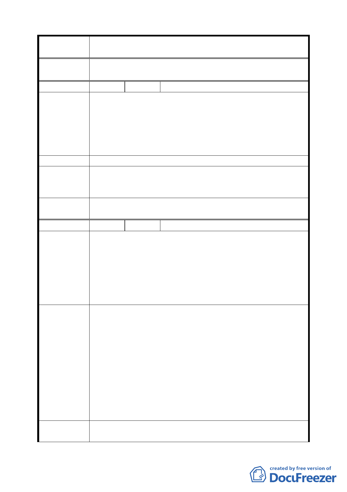

案 名 臺北市文山區都市計畫通盤檢討（主要計畫）案
決 議 依專案小組審查結論辦理。
編 號 ３４ 陳情人 劉美珠、區安全（09430082800）
建議位置：頭廷段二小段 288、288-1、288-2 地號（萬壽路
61 巷 64 號）。
陳 情 理 由 建議理由：
（ 主 動 1 ） 本山區集水道旁如闢為人行步道，將會有人丟棄垃圾、影響
社區安全；此與動物園外圍道路不相干，越過山頭才是動物
園。
建 議 辦 法 「主動 1」新計畫「人行步道用地」部分請恢復為住 2 用地。
專案小組
審查結論
（94.12.21）
該路段東側第二種住宅區，仍有指定建築線之需求以及道路
完整性，維持原公展計畫。
委員會議
決議
依專案小組審查結論辦理。
編 號 ３５ 陳情人 台灣電力股份有限公司（09430114600）
一、「主景 3」臺北變電所附近地區，原計畫為「變電所用地」、
住宅區，新計畫規劃為「特定專用區」，管制及相關規定
陳情理由
（主景 3）
第二項規定應提供 1/3 土地做為公園用地，並與特定專
用區整體規劃。
二、管制及相關規定第 1 項規定捷運興捷變電所配合整體規
劃以多目標使用設置於地下。由於興捷變電所為市府捷
運局所有，下地費用初估約 7 億元以上。
一、特定專用區未明訂使用項目，茲參照『變更理由 2』配
合捷運場站之設置，發展為地區性商業核心之說明，建
議管制及相關規定第 2 項增列「地區性商業核心使用等
文字，例如：允許使用項目應延續周邊第三種商業區及
第四種住宅區之使用管制訂定」。
建 議 辦 法 二、若捷運局對於興捷變電所無下地計畫及相關預算，恐將
影響日後本專用區整體規劃開發，因此是否刪除下地之
管制規定，建請審酌。若仍須保留此項規定，為免影響
整體開發，建議第二項「應提供 1/3 土地做為公園用地」，
增列「以代金替代文字，例如：或以提供相當價值之代
金」。
專 案 小 組 一、電力設施地下化文字改以「地下化為原則」，增加「本基
審查結論
地適用公共設施多目標使用」之文字。
二二